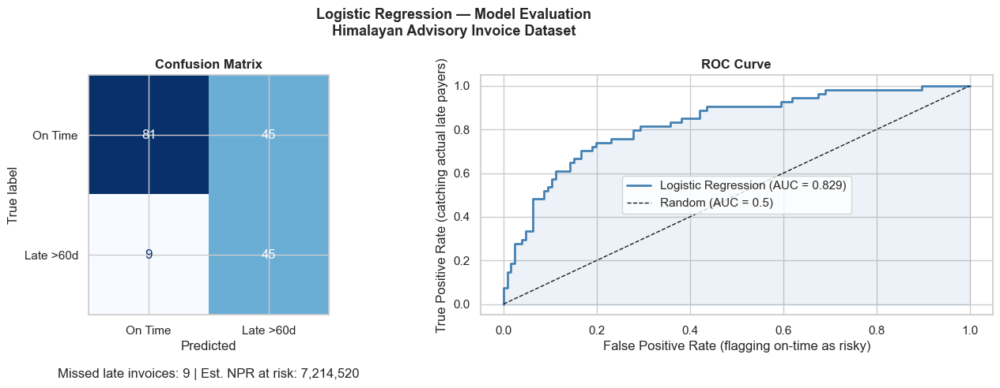
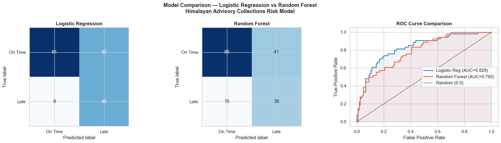
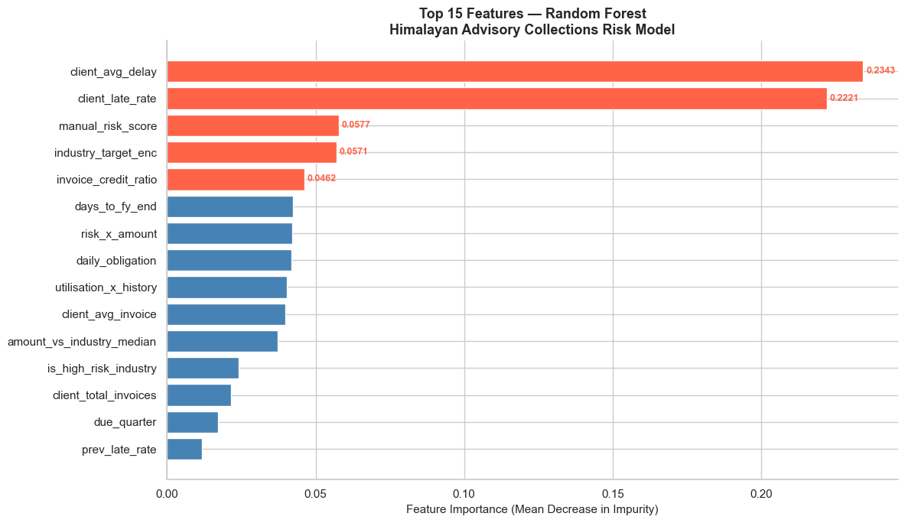
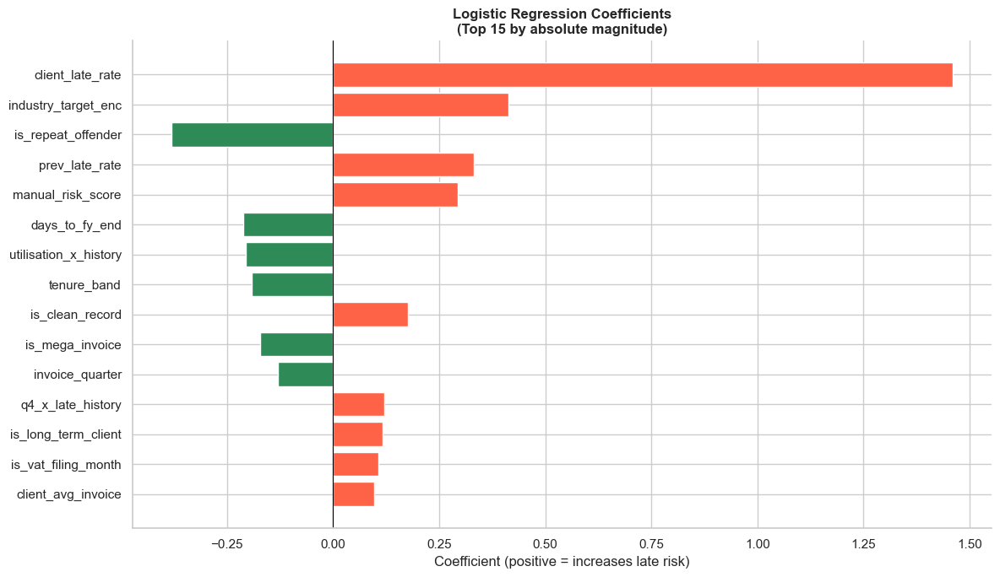

Module 09: Regression & Classification Modelling for CA Professionals
Himalayan Advisory & Accounting Services Pvt. Ltd. — Kathmandu
Part 1: Why Does This Matter to You?
"We spend 3 months every year chasing late payments from the same clients. We know who they are — we just can't prove it to management until the damage is done."
— Senior CA Partner, Kathmandu-based accounting firm
Every CA firm carries credit risk on every invoice it issues. Right now, most firms manage this with gut feel and experience. Regression and classification models let you replace intuition with a number that says:
"This client has a 73% probability of paying late. You should require advance payment or reduce their credit limit."
This is not futuristic AI. It is applied statistics on your own ERP data — and after this module, you will be able to build it in 30 minutes.
The Business Problem
Himalayan Advisory has 900 invoices in its ledger. The partner wants a system that:
| Question | Model Type | Output |
|---|---|---|
| Will this client pay late? | Classification | Yes / No |
| How many days will they be late? | Regression | 12 days, 45 days... |
| Which clients should get a credit limit reduction? | Classification | Risk tier |
We already have nepal_invoice_features.csv from Module 08 — 42 engineered features ready to go.
Part 2: Fundamentals
What is a Model?
A model is a mathematical function that maps inputs (features) to outputs (predictions):
f(invoice_credit_ratio, prev_late_rate, industry, ...) → Is_Late (0 or 1)
The model learns this function from historical data where we already know the answer.
Two Families of Models
| Family | Task | Target | Example |
|---|---|---|---|
| Regression | Predict a continuous number | Days delayed, Invoice amount | Linear Regression |
| Classification | Predict a category / probability | Late or Not Late | Logistic Regression, Random Forest |
Logistic Regression is the workhorse of binary classification (yes/no outcomes). Despite its name, it is a classification model — it predicts the probability of an event.
The Modelling Workflow
Raw Data
│
▼
Feature Engineering (Module 08) ←── already done!
│
▼
Train / Test Split
│
▼
Fit Model on Training Data
│
▼
Predict on Test Data
│
▼
Evaluate (Accuracy, Precision, Recall, AUC-ROC)
│
▼
Interpret → Business Recommendations
Why Train/Test Split?
A model that memorises training data perfectly will fail on new data — this is called overfitting.
We hold back 20–30% of the data (the test set) to simulate how the model performs on invoices it has never seen.
All 900 invoices
├── 720 Training → model learns from these
└── 180 Test → we evaluate on these (model has never seen them)
Key rule: Never use test data to make any decisions until the very end. Treat it like future invoices.
Evaluation Metrics — The CA Interpretation
| Metric | Formula | CA Interpretation |
|---|---|---|
| Accuracy | Correct / Total | % invoices classified correctly |
| Precision | TP / (TP + FP) | Of invoices flagged as risky, how many were actually late? |
| Recall | TP / (TP + FN) | Of all late invoices, how many did we catch? |
| F1 Score | Harmonic mean of P & R | Balanced measure |
| AUC-ROC | Area under ROC curve | 0.5 = random; 1.0 = perfect |
For collections risk: Recall matters more than Precision. Missing a late payer (False Negative) costs you real NPR. A false alarm (False Positive) is just an awkward conversation.
Part 3: Hands-on — Build and Evaluate Two Models
Section 1: Setup and Data Loading
import pandas as pd
import numpy as np
import matplotlib.pyplot as plt
import seaborn as sns
from sklearn.model_selection import train_test_split
from sklearn.linear_model import LogisticRegression
from sklearn.ensemble import RandomForestClassifier
from sklearn.preprocessing import StandardScaler
from sklearn.metrics import (classification_report, confusion_matrix,
roc_auc_score, roc_curve, ConfusionMatrixDisplay)
import warnings
warnings.filterwarnings('ignore')
%matplotlib inline
plt.rcParams['figure.dpi'] = 100
sns.set_theme(style='whitegrid')
# Load engineered features from Module 08
df = pd.read_csv('nepal_invoice_features.csv')
print(f'Loaded: {df.shape[0]} invoices, {df.shape[1]} columns')
print(f'Late payers: {df["Is_Late"].sum()} ({df["Is_Late"].mean()*100:.1f}%)')
print(f'\nColumns ({len(df.columns)}):')
print(', '.join(df.columns.tolist()))
Loaded: 900 invoices, 40 columns
Late payers: 272 (30.2%)
Columns (40):
invoice_credit_ratio, prev_late_rate, amount_vs_industry_median, daily_obligation, is_high_utilisation, is_repeat_offender, is_clean_record, is_first_time_client, is_long_term_client, is_high_risk_industry, is_mega_invoice, is_Q4_due, is_dashain_season, is_vat_filing_month, invoice_quarter, due_quarter, days_to_fy_end, due_on_weekend, industry_target_enc, tenure_band, amount_band_ord, utilisation_x_history, risk_x_amount, q4_x_late_history, manual_risk_score, client_total_invoices, client_avg_invoice, client_avg_delay, client_late_rate, client_late_count, Invoice_Amount, Tenure_Years, Prev_Late_Count, Credit_Days, Invoice_ID, Client_ID, Client_Name, Industry, Province, Is_Late
Section 2: Prepare Features and Target
# Feature columns (numeric only — already engineered in Module 08)
feature_cols = [
# Ratio features
'invoice_credit_ratio', 'prev_late_rate', 'amount_vs_industry_median', 'daily_obligation',
# Binary flags
'is_high_utilisation', 'is_repeat_offender', 'is_clean_record',
'is_first_time_client', 'is_long_term_client', 'is_high_risk_industry',
'is_mega_invoice', 'is_Q4_due', 'is_dashain_season', 'is_vat_filing_month',
# Date features
'invoice_quarter', 'due_quarter', 'days_to_fy_end',
# Categorical encodings
'industry_target_enc', 'tenure_band', 'amount_band_ord',
# Interaction features
'utilisation_x_history', 'risk_x_amount', 'q4_x_late_history',
'new_client_x_utilisation', 'manual_risk_score',
# Aggregation features
'client_late_rate', 'client_avg_delay', 'client_total_invoices', 'client_avg_invoice',
]
# Keep only columns that exist in the loaded CSV
feature_cols = [c for c in feature_cols if c in df.columns]
X = df[feature_cols].copy()
y = df['Is_Late'].copy()
print(f'Feature matrix shape: {X.shape}')
print(f'Target: {y.value_counts().to_dict()}')
print(f'\nMissing values in features:')
missing = X.isnull().sum()
print(missing[missing > 0] if missing.any() else ' None — clean dataset!')
Feature matrix shape: (900, 28)
Target: {0: 628, 1: 272}
Missing values in features:
None — clean dataset!
# Train / Test split — stratify to preserve class balance
X_train, X_test, y_train, y_test = train_test_split(
X, y,
test_size=0.20, # Hold back 20% as unseen test invoices
random_state=42,
stratify=y # Ensure both splits have the same late-payer ratio
)
print(f'Training set: {X_train.shape[0]} invoices ({y_train.mean()*100:.1f}% late)')
print(f'Test set: {X_test.shape[0]} invoices ({y_test.mean()*100:.1f}% late)')
Training set: 720 invoices (30.3% late)
Test set: 180 invoices (30.0% late)
Section 3: Model 1 — Logistic Regression
Logistic Regression is the simplest and most interpretable classifier. It learns a weight for each feature, making it easy to explain to a CA partner: "The model penalises a high prev_late_rate by X and rewards a is_clean_record flag by Y."
# Scale features — Logistic Regression is sensitive to scale
scaler = StandardScaler()
X_train_sc = scaler.fit_transform(X_train)
X_test_sc = scaler.transform(X_test) # Use training scale on test — never refit!
# Fit Logistic Regression
lr = LogisticRegression(max_iter=1000, random_state=42, class_weight='balanced')
lr.fit(X_train_sc, y_train)
# Predictions
y_pred_lr = lr.predict(X_test_sc)
y_prob_lr = lr.predict_proba(X_test_sc)[:, 1] # Probability of being late
print('=== Logistic Regression — Test Set Results ===')
print()
print(classification_report(y_test, y_pred_lr,
target_names=['On Time', 'Late >60d']))
=== Logistic Regression — Test Set Results ===
precision recall f1-score support
On Time 0.90 0.64 0.75 126
Late >60d 0.50 0.83 0.62 54
accuracy 0.70 180
macro avg 0.70 0.74 0.69 180
weighted avg 0.78 0.70 0.71 180
# Visualise Confusion Matrix
fig, axes = plt.subplots(1, 2, figsize=(14, 5))
fig.suptitle('Logistic Regression — Model Evaluation\nHimalayan Advisory Invoice Dataset',
fontsize=13, fontweight='bold')
# Confusion matrix
cm_lr = confusion_matrix(y_test, y_pred_lr)
disp = ConfusionMatrixDisplay(confusion_matrix=cm_lr, display_labels=['On Time', 'Late >60d'])
disp.plot(ax=axes[0], colorbar=False, cmap='Blues')
axes[0].set_title('Confusion Matrix', fontweight='bold')
# Add NPR cost annotation
tn, fp, fn, tp = cm_lr.ravel()
avg_invoice = df['Invoice_Amount'].mean() if 'Invoice_Amount' in df.columns else 350000
missed_revenue = fn * avg_invoice
axes[0].set_xlabel(f'Predicted\n\nMissed late invoices: {fn} | Est. NPR at risk: {missed_revenue:,.0f}')
# ROC Curve
auc_lr = roc_auc_score(y_test, y_prob_lr)
fpr, tpr, _ = roc_curve(y_test, y_prob_lr)
axes[1].plot(fpr, tpr, color='steelblue', lw=2,
label=f'Logistic Regression (AUC = {auc_lr:.3f})')
axes[1].plot([0,1],[0,1], 'k--', lw=1, label='Random (AUC = 0.5)')
axes[1].fill_between(fpr, tpr, alpha=0.1, color='steelblue')
axes[1].set_xlabel('False Positive Rate (flagging on-time as risky)')
axes[1].set_ylabel('True Positive Rate (catching actual late payers)')
axes[1].set_title('ROC Curve', fontweight='bold')
axes[1].legend()
plt.tight_layout()
plt.show()
print(f'AUC-ROC: {auc_lr:.4f} (1.0 = perfect, 0.5 = random guess)')

AUC-ROC: 0.8286 (1.0 = perfect, 0.5 = random guess)
Section 4: Model 2 — Random Forest
Random Forest builds hundreds of decision trees and averages their votes. It handles non-linear relationships and interactions automatically — no need to manually engineer interaction features. It also provides feature importance scores: which variables drive the prediction most?
# Random Forest — no scaling needed
rf = RandomForestClassifier(
n_estimators=200,
max_depth=8,
min_samples_leaf=5,
class_weight='balanced',
random_state=42,
n_jobs=-1
)
rf.fit(X_train, y_train)
y_pred_rf = rf.predict(X_test)
y_prob_rf = rf.predict_proba(X_test)[:, 1]
print('=== Random Forest — Test Set Results ===')
print()
print(classification_report(y_test, y_pred_rf,
target_names=['On Time', 'Late >60d']))
=== Random Forest — Test Set Results ===
precision recall f1-score support
On Time 0.85 0.67 0.75 126
Late >60d 0.49 0.72 0.58 54
accuracy 0.69 180
macro avg 0.67 0.70 0.67 180
weighted avg 0.74 0.69 0.70 180
# Compare both models side-by-side
fig, axes = plt.subplots(1, 3, figsize=(18, 5))
fig.suptitle('Model Comparison — Logistic Regression vs Random Forest\nHimalayan Advisory Collections Risk Model',
fontsize=13, fontweight='bold')
# Confusion matrices
for ax, y_pred, title in zip(axes[:2],
[y_pred_lr, y_pred_rf],
['Logistic Regression', 'Random Forest']):
cm = confusion_matrix(y_test, y_pred)
ConfusionMatrixDisplay(cm, display_labels=['On Time', 'Late']).plot(
ax=ax, colorbar=False, cmap='Blues')
ax.set_title(title, fontweight='bold')
# ROC Curves overlaid
auc_rf = roc_auc_score(y_test, y_prob_rf)
fpr_rf, tpr_rf, _ = roc_curve(y_test, y_prob_rf)
axes[2].plot(fpr, tpr, color='steelblue', lw=2,
label=f'Logistic Reg (AUC={auc_lr:.3f})')
axes[2].plot(fpr_rf, tpr_rf, color='tomato', lw=2,
label=f'Random Forest (AUC={auc_rf:.3f})')
axes[2].plot([0,1],[0,1],'k--', lw=1, label='Random (0.5)')
axes[2].fill_between(fpr, tpr, alpha=0.08, color='steelblue')
axes[2].fill_between(fpr_rf, tpr_rf, alpha=0.08, color='tomato')
axes[2].set_xlabel('False Positive Rate')
axes[2].set_ylabel('True Positive Rate')
axes[2].set_title('ROC Curve Comparison', fontweight='bold')
axes[2].legend()
plt.tight_layout()
plt.show()
print(f'Logistic Regression AUC: {auc_lr:.4f}')
print(f'Random Forest AUC: {auc_rf:.4f}')
better = 'Random Forest' if auc_rf > auc_lr else 'Logistic Regression'
print(f'\nWinner: {better}')

Logistic Regression AUC: 0.8286
Random Forest AUC: 0.7925
Winner: Logistic Regression
Section 5: Feature Importance — What Drives Late Payments?
Random Forest gives us a feature importance score for each variable. This is the answer to the partner's question: "Which client characteristics should I actually care about?"
# Feature importance from Random Forest
importance_df = pd.DataFrame({
'Feature': feature_cols,
'Importance': rf.feature_importances_
}).sort_values('Importance', ascending=False).head(15)
fig, ax = plt.subplots(figsize=(12, 7))
colors = ['tomato' if i < 5 else 'steelblue' for i in range(len(importance_df))]
bars = ax.barh(importance_df['Feature'][::-1],
importance_df['Importance'][::-1],
color=colors[::-1], edgecolor='white')
ax.set_xlabel('Feature Importance (Mean Decrease in Impurity)', fontsize=11)
ax.set_title('Top 15 Features — Random Forest\nHimalayan Advisory Collections Risk Model',
fontsize=13, fontweight='bold')
# Annotate top 5
for bar, val in zip(bars[-5:], importance_df['Importance'][:5][::-1]):
ax.text(bar.get_width() + 0.001, bar.get_y() + bar.get_height()/2,
f'{val:.4f}', va='center', fontsize=9, fontweight='bold', color='tomato')
ax.spines['top'].set_visible(False)
ax.spines['right'].set_visible(False)
plt.tight_layout()
plt.show()
print('Top 5 most important features:')
for i, row in importance_df.head(5).iterrows():
bar = '█' * int(row['Importance'] * 500)
print(f' {row["Feature"]:<35} {row["Importance"]:.4f} {bar}')

Top 5 most important features:
client_avg_delay 0.2343 █████████████████████████████████████████████████████████████████████████████████████████████████████████████████████
client_late_rate 0.2221 ███████████████████████████████████████████████████████████████████████████████████████████████████████████████
manual_risk_score 0.0577 ████████████████████████████
industry_target_enc 0.0571 ████████████████████████████
invoice_credit_ratio 0.0462 ███████████████████████
Section 6: Risk-Scored Invoice Report
The ultimate output: a ranked list of the riskiest invoices, with a probability score the partner can use to prioritise collections calls.
# Score all invoices with Random Forest probabilities
df_scored = df.copy()
X_all_sc = X.copy()
X_all_filled = X_all_sc.fillna(X_all_sc.median())
df_scored['Late_Probability'] = rf.predict_proba(X_all_filled)[:, 1]
# Assign risk tier
def risk_tier(p):
if p >= 0.70: return '🔴 High Risk'
elif p >= 0.45: return '🟡 Medium Risk'
else: return '🟢 Low Risk'
df_scored['Risk_Tier'] = df_scored['Late_Probability'].apply(risk_tier)
# Summary by tier
print('=== Risk Tier Summary ===')
tier_summary = df_scored.groupby('Risk_Tier').agg(
Count=('Invoice_ID', 'count'),
Avg_Late_Prob=('Late_Probability', 'mean'),
Actual_Late_Rate=('Is_Late', 'mean')
).round(3)
tier_summary['Actual_Late_Rate_%'] = (tier_summary['Actual_Late_Rate'] * 100).round(1)
print(tier_summary[['Count','Avg_Late_Prob','Actual_Late_Rate_%']].to_string())
# Show highest risk invoices
print('\n=== Top 10 Highest Risk Invoices ===')
top_risk_cols = ['Client_ID', 'Client_Name', 'Industry', 'Late_Probability', 'Risk_Tier', 'Is_Late']
available_cols = [c for c in top_risk_cols if c in df_scored.columns]
print(df_scored.nlargest(10, 'Late_Probability')[available_cols].to_string(index=False))
=== Risk Tier Summary ===
Count Avg_Late_Prob Actual_Late_Rate_%
Risk_Tier
🔴 High Risk 125 0.792 92.0
🟡 Medium Risk 280 0.572 50.0
🟢 Low Risk 495 0.207 3.4
=== Top 10 Highest Risk Invoices ===
Client_ID Client_Name Industry Late_Probability Risk_Tier Is_Late
NP0164 Lumbini Hospitality Pvt. Ltd. Tourism & Hotels 0.911294 🔴 High Risk 1
NP0053 Everest Imports Pvt. Ltd. Trading & Import 0.903303 🔴 High Risk 1
NP0192 Lumbini Hospitality Pvt. Ltd. Tourism & Hotels 0.889083 🔴 High Risk 1
NP0164 Sagarmatha Trekking Co. Tourism & Hotels 0.885819 🔴 High Risk 1
NP0053 Nepal Infrastructure Pvt. Ltd. Construction 0.884960 🔴 High Risk 1
NP0157 Himalayan Traders Pvt. Ltd. Trading & Import 0.881933 🔴 High Risk 1
NP0022 Bhaktapur Builders Construction 0.880934 🔴 High Risk 1
NP0108 Bhaktapur Builders Construction 0.878556 🔴 High Risk 1
NP0192 Bhaktapur Builders Construction 0.871831 🔴 High Risk 1
NP0103 Lumbini Hospitality Pvt. Ltd. Tourism & Hotels 0.868635 🔴 High Risk 1
# Export risk-scored report
export_cols = ['Invoice_ID','Client_ID','Client_Name','Industry','Province',
'Late_Probability','Risk_Tier','Is_Late']
export_cols = [c for c in export_cols if c in df_scored.columns]
df_scored.sort_values('Late_Probability', ascending=False)[export_cols].to_excel(
'nepal_invoice_risk_scores.xlsx', index=False)
print('Risk-scored report saved to nepal_invoice_risk_scores.xlsx')
print(f'\nTotal invoices scored: {len(df_scored)}')
print(df_scored['Risk_Tier'].value_counts().to_string())
Risk-scored report saved to nepal_invoice_risk_scores.xlsx
Total invoices scored: 900
Risk_Tier
🟢 Low Risk 495
🟡 Medium Risk 280
🔴 High Risk 125
Part 4: Practice Exercises
Exercise 1 — Threshold Tuning
By default, predict() classifies as Late if probability ≥ 0.5. But for a conservative CA firm, you may prefer to flag invoices with probability ≥ 0.35 as risky.
- Using
y_prob_rf(Random Forest probabilities on the test set), classify as Late if probability ≥ 0.35 - Print the
classification_reportfor this threshold - Compare Recall and Precision vs the default 0.5 threshold. What is the tradeoff?
Exercise 2 — Industry-Level Risk Report
Create a summary DataFrame showing, by Industry:
- Total invoices
- Average Late_Probability (from df_scored)
- Actual late rate (%)
- Count of High Risk invoices
Sort by average Late_Probability descending. Which industry should Himalayan Advisory tighten credit terms for?
Exercise 3 — Logistic Regression Coefficients
Logistic Regression coefficients tell you the direction and strength of each feature's effect.
- Create a DataFrame of feature names and their LR coefficients (
lr.coef_[0]) - Sort by absolute coefficient value (descending)
- Plot a horizontal bar chart — positive coefficients in red (increase late risk), negative in green (reduce risk)
- Write 2 sentences interpreting the top positive and top negative coefficient for a non-technical partner
Solutions in cells below.
# SOLUTION — Exercise 1: Threshold Tuning
threshold = 0.35
y_pred_35 = (y_prob_rf >= threshold).astype(int)
print(f'=== Random Forest — Threshold = {threshold} ===')
print(classification_report(y_test, y_pred_35, target_names=['On Time', 'Late >60d']))
from sklearn.metrics import precision_score, recall_score
print('Comparison:')
print(f' Threshold 0.5 → Precision: {precision_score(y_test, y_pred_rf):.3f} Recall: {recall_score(y_test, y_pred_rf):.3f}')
print(f' Threshold 0.35 → Precision: {precision_score(y_test, y_pred_35):.3f} Recall: {recall_score(y_test, y_pred_35):.3f}')
print()
print('Interpretation: Lower threshold catches more late payers (higher Recall)')
print('but also flags more on-time payers as risky (lower Precision).')
=== Random Forest — Threshold = 0.35 ===
precision recall f1-score support
On Time 0.93 0.43 0.59 126
Late >60d 0.41 0.93 0.57 54
accuracy 0.58 180
macro avg 0.67 0.68 0.58 180
weighted avg 0.77 0.58 0.58 180
Comparison:
Threshold 0.5 → Precision: 0.487 Recall: 0.722
Threshold 0.35 → Precision: 0.410 Recall: 0.926
Interpretation: Lower threshold catches more late payers (higher Recall)
but also flags more on-time payers as risky (lower Precision).
# SOLUTION — Exercise 2: Industry-Level Risk Report
industry_risk = df_scored.groupby('Industry').agg(
Total_Invoices=('Invoice_ID', 'count'),
Avg_Late_Prob=('Late_Probability', 'mean'),
Actual_Late_Rate=('Is_Late', 'mean'),
High_Risk_Count=('Risk_Tier', lambda x: (x == '🔴 High Risk').sum())
).round(3)
industry_risk['Actual_Late_Rate_%'] = (industry_risk['Actual_Late_Rate'] * 100).round(1)
industry_risk = industry_risk[['Total_Invoices','Avg_Late_Prob','Actual_Late_Rate_%','High_Risk_Count']]
industry_risk = industry_risk.sort_values('Avg_Late_Prob', ascending=False)
print('=== Industry Risk Report — Himalayan Advisory ===')
print(industry_risk.to_string())
print()
print(f'Recommendation: Tighten credit terms for {industry_risk.index[0]}')
print(f'(Avg late probability: {industry_risk["Avg_Late_Prob"].iloc[0]:.1%})')
=== Industry Risk Report — Himalayan Advisory ===
Total_Invoices Avg_Late_Prob Actual_Late_Rate_% High_Risk_Count
Industry
Construction 107 0.543 45.8 32
Tourism & Hotels 108 0.510 42.6 32
Trading & Import 213 0.480 36.2 41
Manufacturing 144 0.371 27.1 13
Agriculture 47 0.352 25.5 3
Hydropower 120 0.296 19.2 3
Services & IT 86 0.280 19.8 1
Banking & Finance 75 0.225 12.0 0
Recommendation: Tighten credit terms for Construction
(Avg late probability: 54.3%)
# SOLUTION — Exercise 3: Logistic Regression Coefficients
coef_df = pd.DataFrame({
'Feature': feature_cols,
'Coefficient': lr.coef_[0]
}).sort_values('Coefficient', key=abs, ascending=False).head(15)
fig, ax = plt.subplots(figsize=(12, 7))
colors = ['tomato' if c > 0 else 'seagreen' for c in coef_df['Coefficient'][::-1]]
ax.barh(coef_df['Feature'][::-1], coef_df['Coefficient'][::-1],
color=colors, edgecolor='white')
ax.axvline(0, color='black', linewidth=0.8)
ax.set_xlabel('Coefficient (positive = increases late risk)')
ax.set_title('Logistic Regression Coefficients\n(Top 15 by absolute magnitude)',
fontweight='bold')
ax.spines['top'].set_visible(False)
ax.spines['right'].set_visible(False)
plt.tight_layout()
plt.show()
top_pos = coef_df[coef_df['Coefficient'] > 0].iloc[0]
top_neg = coef_df[coef_df['Coefficient'] < 0].iloc[0]
print(f'Top risk-increasing feature: {top_pos["Feature"]} (coef={top_pos["Coefficient"]:.3f})')
print(f'Top risk-reducing feature: {top_neg["Feature"]} (coef={top_neg["Coefficient"]:.3f})')
print()
print('Interpretation: A higher', top_pos["Feature"], 'strongly predicts late payment.')
print('Conversely,', top_neg["Feature"], 'reduces the probability of late payment.')

Top risk-increasing feature: client_late_rate (coef=1.460)
Top risk-reducing feature: is_repeat_offender (coef=-0.380)
Interpretation: A higher client_late_rate strongly predicts late payment.
Conversely, is_repeat_offender reduces the probability of late payment.